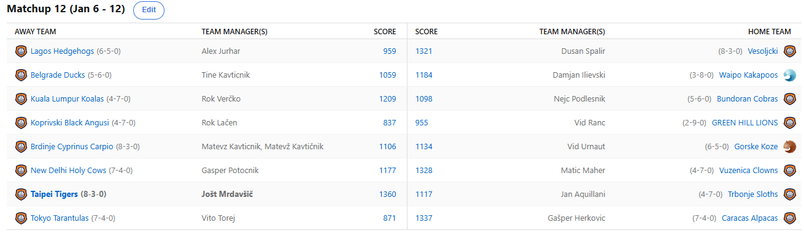

SEZONA 24/25
- Pravila in sistem tekmovanja
- Matchup1 (Oct 22 - Oct 27)
- Matchup2 (Oct 28 - Nov 3)
- Matchup3 (Nov 4 - Nov 10)
- Matchup4 (Nov 11 - Nov 17)
- Matchup5 (Nov 18 - Nov 24)
- Matchup6 (Nov 25 - Dec 1)
- Matchup7 (Dec 2 - Dec 8)
- Matchup8 (Dec 9 - Dec 15)
- Matchup9 (Dec 16 - Dec 22)
- Matchup10 (Dec 23 - Jan 29)
- Matchup11 (Dec 30 - Jan 5)
- Matchup12 (Jan 6 - Jan 12)
- Matchup13 (Jan 13 - Jan 19)
- Matchup14 (Jan 20 - Feb 26)
- Matchup15 (Jan 27 - Feb 2)
- Play-in (Feb 3 - Feb 23)
- Playoff 1 (Feb 24 - Mar 9)
- Playoff 2 (Mar 10 - Mar 23)
- Playoff 3 (Mar 24 - Apr 6)
2024/25 - Fantasy Koroška - sezona 8
MATCHUP 12 (Jan 6 - Jan 12)
Poročilo kroga
Za nami je že 12. teden aktualne sezone in težko bi imeli bolj napeto in izenačeno sezono, kjer ni odločeno tako rekoč nič. Teden, ko se je do zdaj porabilo daleč
najmanj FA denarja in sicer zgolj 118 je postregel z zmagami, ki zaostrujejo gajba battle, med tem ko se je dolgo vodilni Mato poslovil od BYE spotov.
Odkrili smo v tem tednu Lačnov Reddit burner, kjer se je Rok pod pseudonimom VersaceSandals pozanimal, ali je njegov novi Angus, John Collins sploh še živ in bi mu radi na tej točki svetovali,
da se morda pozanima preden trejd dejansko sprejme. Ampak iz napak se učimo in če bo katera šola Rokija drago stala bo to tale – obeta se mu namreč hud boj za mesta v končnici.
Že 5. zaporedni poraz, tokrat celo proti neposrednemu konkurentu Ranacu mu je možnosti zmanjšal na zgolj 61%. Seveda je v izjavi za javnost Lačenovski vso krivdo zvalil
na Samota, ki je menda na draft day deloval na lastno pest in s tem zajebal sezono Angusom.
Vid je ujel zadnji vlak in si s to zmago podaljšal upanje za morebitno uvrstitev v končnico.
K sreči na Slovenskih železnicah če zamudiš vlak ob 14.00 ne rabiš skrbeti …. Najbrž boš ravno pravočasen, da ujameš tistega ob 13.15!
Drvimo dalje, za razliko od Trbonjskih Lenivcev, ki so naslednji kandidati v gajba battlu. Tokrat sicer predstava ni bila tako zelo slaba, a kaj ko so jim nasproti stali izjemni Tigri,
ki so s 5. zaporedno zmago in še tretjim najboljšim scorom v zadnjih 4 tednih poglobili Janovo krizo in vse kaže, da bo tudi Kupster trepetal vse do zadnjega.
Za enega najtrofejnejših managerjev lige je to vsekakor veliko razočaranje in vsekakor bo veliko presenečenje, če Slothsov ne bo v playoffu. Na drugi strani je
Jole izkoristil poraz Kavtna in se zavihtel na mesta, ki prinašajo BYE. Bodo tesni porazi v neposrednih matchupih odločilnih, ali pa LM ne misli več izgubiti in
si bo s tem priboril stress-free februar?
Zadnji preostali kandidat za morebitno gajbo je Ilija. Rookie je tokrat sicer v izjemno pomembnem obračunu uspel slaviti zmago nad Tinki Binkijem, ki mu je očitno bolj kot
ne vseeno na katerem mestu tam na sredi lestvice se nahaja. Povratek Banchera bi utegnil predstavljati problem za Dilijeve nasprotnike, zdaj ko je solidno
zdrav namreč nikakor niso več Waipo Kanonfutrčki tako enostaven zalogaj. Se lahko izvleče in v rdečo cono pahne Kupsa ali Lačna? Vsekakor naloga ne bo enostavna,
nasproti mu bo tokrat stalo najbolj v formi moštvo lige – Veseli Vesoljčki! Bo ruleta mojstra Tineta uspel morda podkupiti Ranac?
Ni se namučil Dule v tem tednu za svojo novo, že 7. zaporedno zmago. Rutinirano je pohodil Ježke, ki že od samega začetka niso imeli nobene možnosti.
Aleks neizmerno pogreša svojega Butlerja, za katerega pa nič ne kaže, da bi počasi odslužil kazen in se vrnil v Miamijev dres. Po tem ko je v soboto utapljal
žalost v alkoholu po Ravnah, je Aleks menda že začel tudi taktizirati in preračunavati, na koga se namestiti v play-inu, da mu morda uspe uvrstitev v četrtfinale.
Za razliko od Butlerja pa je kazen že odslužil Duka, ki je tekmo proti Preboldu prisilno spremljal s tribune.
Je reformiran ali pa si je med pavzo že zapisal kakšen nov flejmič na sodnike?
Če gremo po lestvici od spodaj navzgor kaj kmalu najdemo že tudi aktualnega prvaka Nejca. Medtem ko trepeta in šteje veto glasove, mu je teden pokvaril še Verčko,
ki mu je prizadejal nov poraz in se zdaj z njim izenačil na 11. oz. 12. mestu. Oba prva picka, ki sta bila gladko prediction favorita za most
combined pts, Embiid in Jokič sta skupaj zbrala vsega 2 od možnih 8 tekem, a je odsotnost svojega bolje nadomestil Rok, ki si je s tem tako
rekoč zagotovil končnico. Verčko, ki je bolan razen ko mora na Jezernike, je baje v Kuala Lumpurju že začel postavljati hipodrom, ki bo menda
še večji od tistega v Tokyu, ki sprejme kar 223 tisoč gledalcev, v želji da v svojem propadajočem moštvu tudi v primeru hitrega izpada zadrži Jokaro. Mu bo uspelo?
Še zadnji na scoru 5-7, ki pa bi vsekakor moral biti boljši pa je Maher. Njegovi Klovni so kljub temu izkupičku strah in trepet lige in vsekakor se jim bodo večinoma poskusili izogniti v
playin rundi. Maher, ki je na takozvani Unluckiest Lestvici z naskokom na prvem mestu, se dviguje in je s tretjo zaporedno zmago zdaj tako rekoč
rešen svojega letnega poslanstva – prinesti gajbo. Tokrat bo vajeti očitno predal drugim, sam pa poskusil z roba deseterice napasti visoka mesta.
Vsekakor je bil že čas za tak podvig in srečno Maticu pri tem. Tokrat je KONČNO uspel premagati tudi Gepsa in s tem zmanjšal grozovito razliko v
medsebojnih obračunih … na -2497 točk XD. Grozno slabo, ampak vsaj korak v pravo smer. Gašper je sicer še vedno na visokem 5. mestu in se mu obeta ena boljših sezon.
Drugi in zadnji Gašper po upokojitvi Lužaca pa je naš krotitelj Alpak, Herko. Tokrat je uspel ukrotiti tudi Tarantele, ki so skozi celoten teden obupano poskušale zaključiti
trejd za Janisa in se s samim matchupom niso preveč ukvarale. Najvišja razlika tedna, kar 466 točk je torej prinesla teden, ki ga bo Vito poskušal
čimprej pozabiti. Podobno kot tekmo s Hrastnikom hehe. Bo novopridobljeni Antetoukounmpo dovolj, da se ogrozi Tigerse ali pa bo Vito moral še kak
teden počakati na novo priložnost? Herko ima svojo računico še tudi za BYE, ampak bo moral počakati na kakšen kiks tistih pred njim, vsekakor pa s svojimi
Alpakami vzbuja strah in bo z visokega mesta napadal novo titulo. Mu lahko kot drugemu uspe priti do druge skupne zmage?
Ostal nam je le še najbolj napet obračun med Kavtom in Urnautom. Slednji je kljub nekaterim questionable managerskim potezam uspel ohraniti minimalno prednost in premagati
ljudskega sovražnika številka ena. Mr. Margarita, ki tudi prejšnji teden še ni ugotovil koliko soka z vodo si mora naročiti pri malici, da bo lahko popil
celega, je zdaj zasidran na 6. mestu in se mu obeta soliden razpored v končnici. Na drugi strani pa je Mato v hudi krizi, po tem ko je prvih 7 krogov
tako rekoč neprestano sukal gobček pa je zdaj na žalost popolnoma obmoknil, zdrsnil z BYE mest in panika na Brdinjah se iz dneva v dan stopnjuje.
Bo dočakal kiks Tigrov ali Vesoljčkov in si priboriti top2?
Kaj nas čaka v 13. tednu? Vsekakor nas bo zanimal obračun bestijev, Ranaca in Tajna, kjer upamo da ne bo potrebno posredovanje protikorupcijske komisije,
pestro bo tudi v obračunu 2. in 3. najboljšega 2K playerja Rožne Doline – Kupsa in Kavta, po lestvici sodeč pa bo zanimiv tudi obračun
Tigrov in Tarantel. Pa bo res? Pričakujemo pa iskrice tudi med Fredom in Cickom, ki je naš »content« dvoboj tedna.
Srečno vsem, predictione čakamo še od 7 folka!